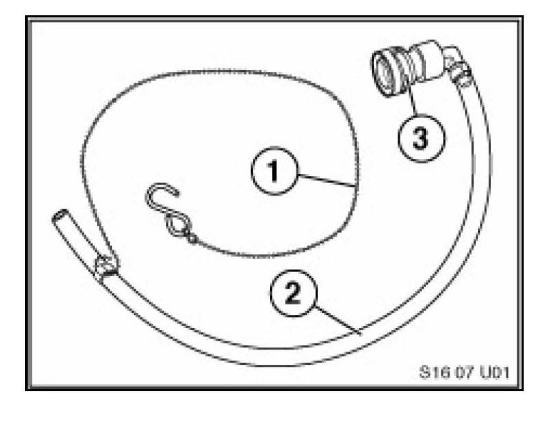
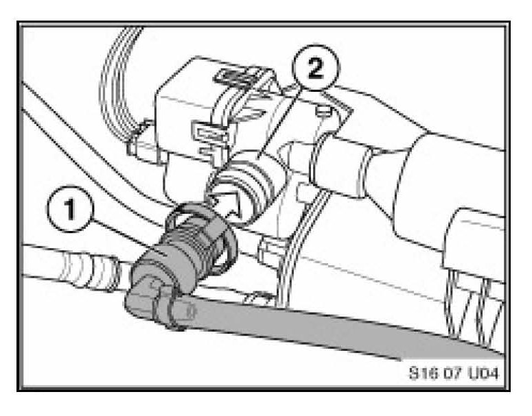
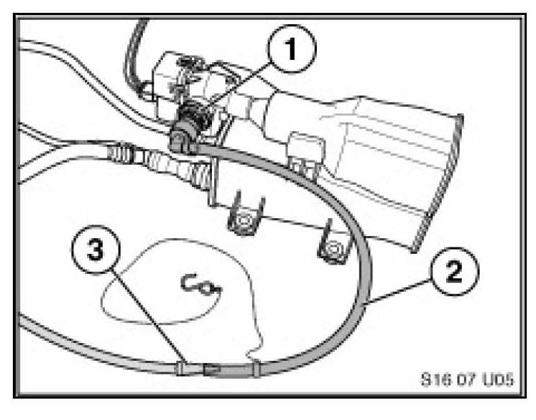
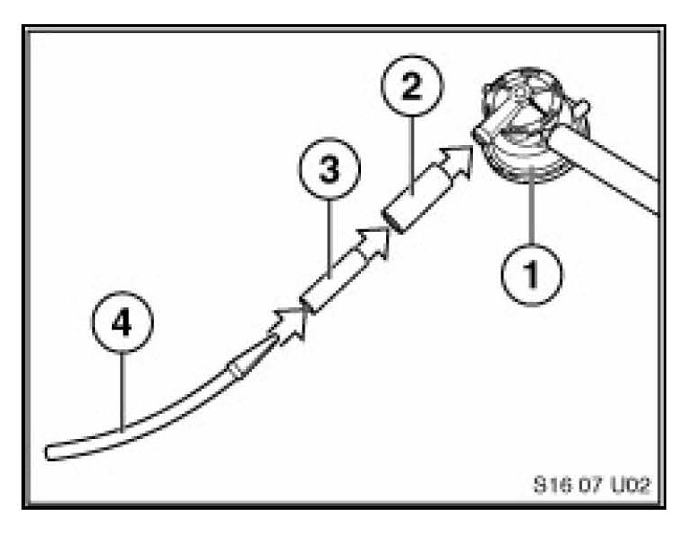
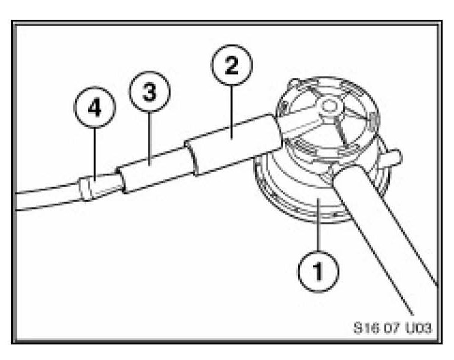

Emissions - Evaporative Emissions System Testing
SI B 16 01 07Fuel Supply Systems
August 2007
Technical Service
This Service Information bulletin supersedes S.I. B16 01 07 dated August 2007.
[NEW] designates changes to this revision
SUBJECT
Testing Evaporative Systems for Leaks
MODEL
All Models
INFORMATION
Testing evaporative systems for leaks is very challenging. We have developed some diagnostic hints along with the introduction of a new special tool to properly connect a smoke machine to the DMTL fresh air vent/filter connection.
Recently the VACUTEC(R) Smoke Machine [NEW] 625-522B-BMW has been added to the BMW Equipment Program. The VACUTEC(R) Smoke Machine[NEW] 625-522B-BMW is the only approved testing device for fuel and evaporative systems. This device automatically converts air to high purity nitrogen using Pressure Swing Absorption (PSA) nitrogen technology. Orders for the VACUTEC(R) Smoke Machine [NEW] 625-522B-BMW can be placed by calling the BMW Equipment program at 1-888-222-7997.
Included with the new VACUTEC(R) smoke machine are various caps and adaptors to help connect the applicator hose to the vehicle. It is always suggested to not disturb the system before testing, try to create as little as possible disturbance to the system when connecting the smoke machine. This smoke machine utilizes an UltraTraceUV(R) smoke solution. The smoke solution incorporates an ultraviolet dye which helps pinpoint the leak with an ultraviolet residue surrounding the leak area. Determining the source of the leak is made easy when the included Hi-Density True UV LED light and incandescent white light are used.

Shown is a new test tool which can connect directly to DMTL (Diagnosis Module Tank Leakage) pump equipped vehicles only after the fresh air filter connection has been removed.
Evaporative Test Adaptor (for vehicles equipped with a DMTL pump)
PN 83 30 0 433 207
1. Bead Chain Support
2. Hose
3. Quick Connect

Hose Connection to DMTL
1. Quick Connect Adaptor
2. DMTL fresh air filter connection

When properly connecting the tool to the system the main benefit is that it does not disturb the integrity of the system. This tool should be used anytime the vehicle is in the workshop for a small or large leak in evaporative system. Shown in the picture is the tool connected to the DMTL at the fresh air filter connection.
1. Quick Connect Adaptor
2. Clear Hose
3. Smoke application hose/adaptor
All vehicles equipped with a LDP (Leak Diagnosis Pump) system.

Vehicles equipped with the LDP system will require a series of small pieces of rubber hose to adapt the smoke machine application hose.
1. LDP Pump
2. Hose with 16mm inside diameter
3. Hose with 18mm outside diameter
4. Smoke application hose/adaptor

1. LDP Pump
2. Hose with 16mm diameter placed over LDP fresh air filter connection.
3. Hose with 18mm outside diameter pushed in side of hose with 16 mm inside diameter
4. Smoke application hose/adaptor pushed into
For more information regarding evaporative system testing describing possible fire hazards using oxygen vs. nitrogen please refer to the following SAE website.
www.sae.org/technical/papers/2007-01-1235
WARRANTY INFORMATION
Information only

Disclaimer